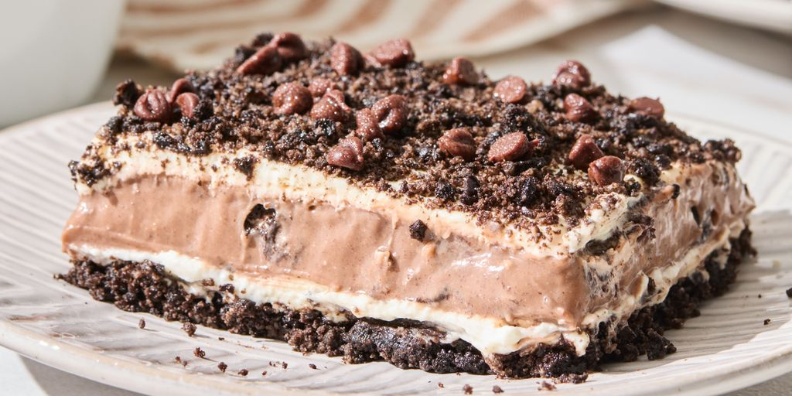

Cookie Delight

Description
Cookie delight are yummy, nostalgic dessert bars with chocolate cookie crust,
creamy cheesecake filling and chocolate pudding layers. It cuts well and is the
perfect dessert to make ahead for a potluck or other gatherings. Kids of all
ages will love it.
Ingredients
- 2 1/2 cups finely crushed chocolate sandwich cookies with white filling
(about 30 cookies)
- 3 tablespoons butter, melted
- 1 (8-ounce) package cream cheese, softened
- 1/2 cup powdered sugar
- 2 cups whipping cream
- 3 cups whole milk
- 1 (4.2 ounce) package instant cookies and creme or vanilla pudding mix
- 1 (3.9 ounce) package instant chocolate pudding mix
- 1/4 cup miniature semisweet chocolate chips
Steps
- Preheat the oven to 350 degrees F (175 degrees C). Lightly grease a
9x13-inch baking dish.
- Combine 2 cups crushed cookies and melted butter in a bowl; stir until
evenly moistened. Press mixture firmly into the prepared baking dish.
- Bake in the preheated oven until set, 10 to 12 minutes. Remove from the oven
and cool completely on a wire rack.
- Combine cream cheese and powdered sugar in a bowl and beat with an electric
mixer on medium speed until smooth. Slowly add whipping cream and continue to
beat until mixture becomes thick and soft peaks form, 3 to 4 minutes.
- Whisk together milk, cookies and cream pudding mix, and chocolate pudding
mix in a separate large bowl until thickened, 2 minutes.
- Spread half of the cream cheese mixture evenly over the cooled crust.
- Spread the pudding evenly over the cream cheese layer.
- Spread remaining cream cheese mixture evenly over the pudding layer.
Sprinkle top with remaining 1/2 cup crushed cookies and miniature chocolate
chips.
- Cover and refrigerate until fully set, at least 8 hours or overnight.
Home